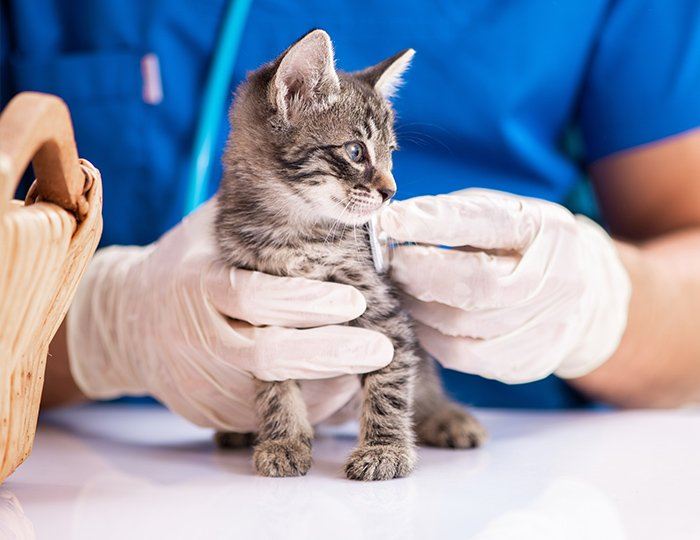
望まない出産を防げる
（多頭飼育、外に遊びに行く猫）
猫ちゃんは交尾によって排卵するため、１回の交尾で高確率で妊娠してしまいます。
去勢していない猫ちゃんと同居していると繁殖が進み、健康な状態で飼育できる限界を超えてしまいます。
外にでる猫ちゃんの場合は、去勢していない猫ちゃんとの交尾で妊娠する可能性も高いです。

※本ページは、猫の健康に関する一般的な情報をご紹介するコラムです。検査・診療の実施可否や設備は医療機関によって異なります。

猫ちゃんは交尾によって排卵するため、１回の交尾で高確率で妊娠してしまいます。
去勢していない猫ちゃんと同居していると繁殖が進み、健康な状態で飼育できる限界を超えてしまいます。
外にでる猫ちゃんの場合は、去勢していない猫ちゃんとの交尾で妊娠する可能性も高いです。
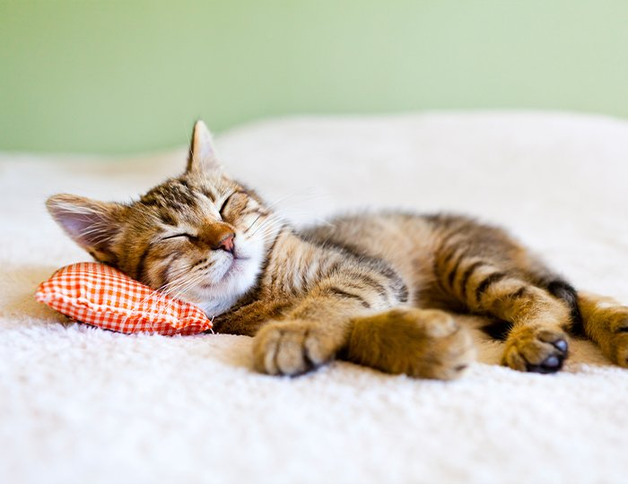
卵巣や子宮に関する病気を予防できる効果が期待できます。
加えて、性ホルモンの分泌の変化によって、女の子の猫ちゃんでは将来の乳腺腫瘍のリスクの軽減に期待でき、さらに交尾の機会がなくなるため、ウイルス感染症のリスクも低下します。
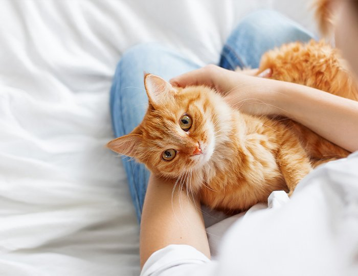
大きい声で鳴き続けたり、お尻を高くつきあげるといった発情期の行動をとるようになります。
大きな声で鳴き続けることは、猫ちゃんにとっても負担となりますし、一緒に暮らす人間にもストレスがかかります。
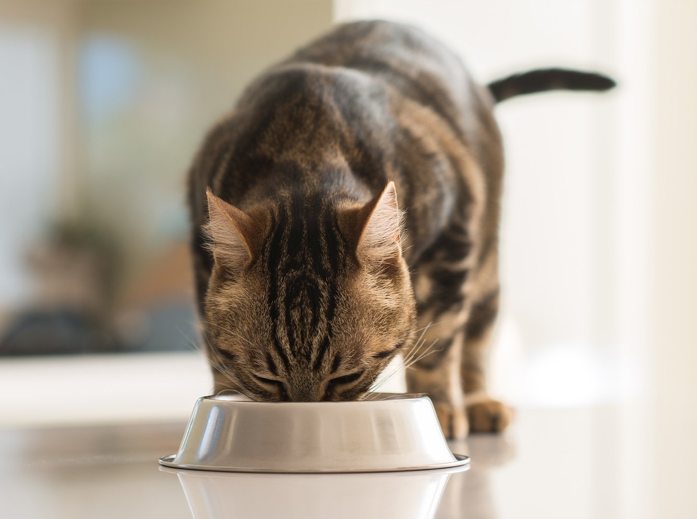
ホルモンバランスの変化により、食欲が非常に強くなったり、基礎代謝率が落ちてしまうことがあります。
それにより肥満になりやすくなる可能性が高まります。肥満はその他の病気にも繋がるため、体重管理などをきちんと行いましょう。
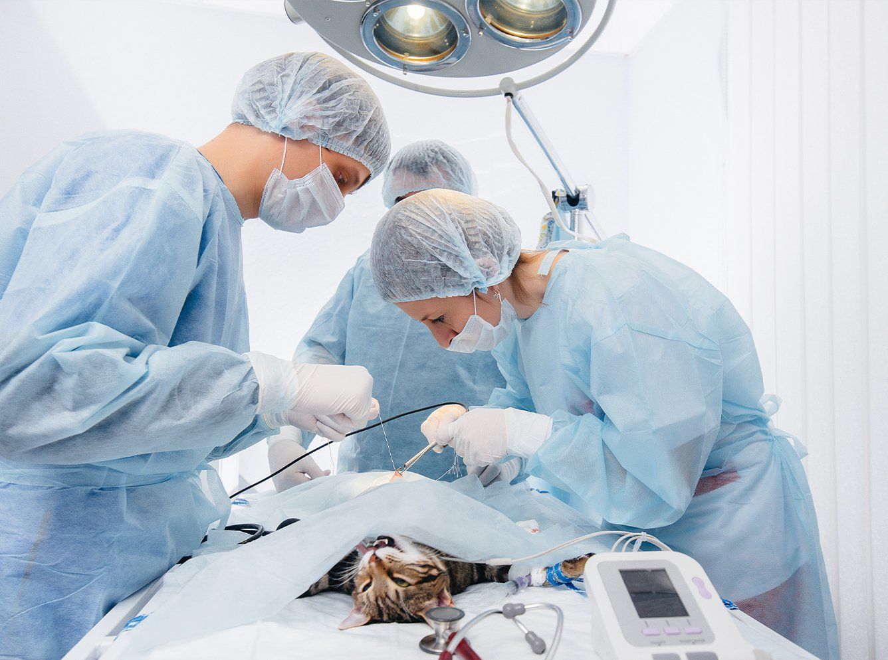
手術は全身麻酔で行われるため、年齢や体調にもよりますが、手術後に体調不良に陥ってしまう危険性もゼロではありません。
手術前に健康状態を検査してから実施しますので、過度に不安になることはありませんが、リスクがあることを理解しましょう。
はじめて発情する生後6〜8か月頃に避妊手術をするとよいでしょう。
※個体差や飼育環境などによって、時期が変動することがありますので、動物病院へご相談ください。
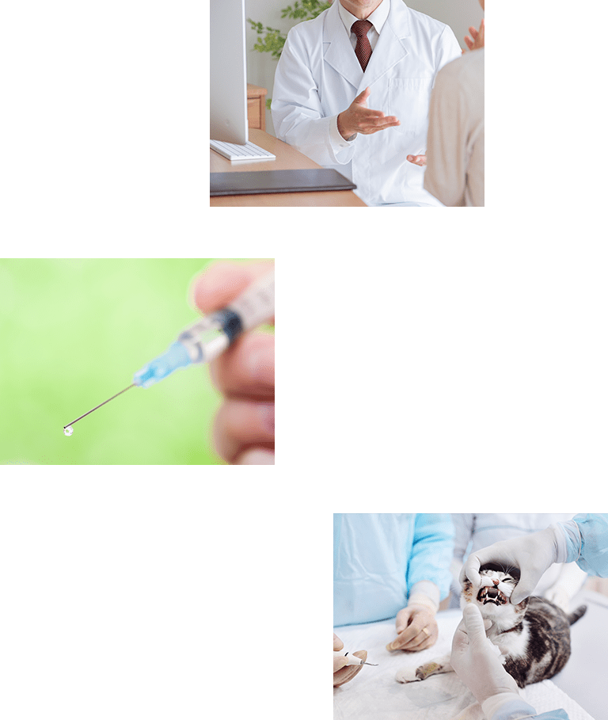
手術前に身体検査、血液検査、レントゲン検査などを行い、麻酔を施しても問題ないか調べます。
全身麻酔をしたあと、開腹して卵巣と子宮を摘出します。
縫合した後は、院内で麻酔から覚めるまでの数時間、経過観察を行います。
日帰りか入院（1日）かは、猫ちゃんの年齢や状態で決定します。
手術から1週間後に抜糸します。
術後1〜2日は食欲低下などがおこる可能性がありますが、数日で元通りになります。
もしそれ以降も元気や食欲が戻らないようであれば、動物病院にご相談ください。
※手術後は太りやすくなるため、食事管理を行いましょう。
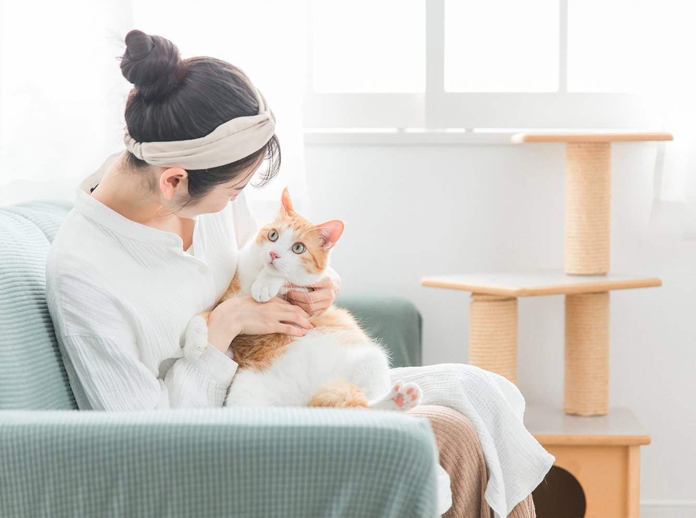
発情することでメスを追いかけて放浪する行動や、尿マーキングといった行動が見られることもあります。
また、発情することで攻撃性が強くなる猫ちゃんもいるため、そういった衝動の抑制ができます。これらの問題行動は一緒に生活する人間にもストレスとなります。
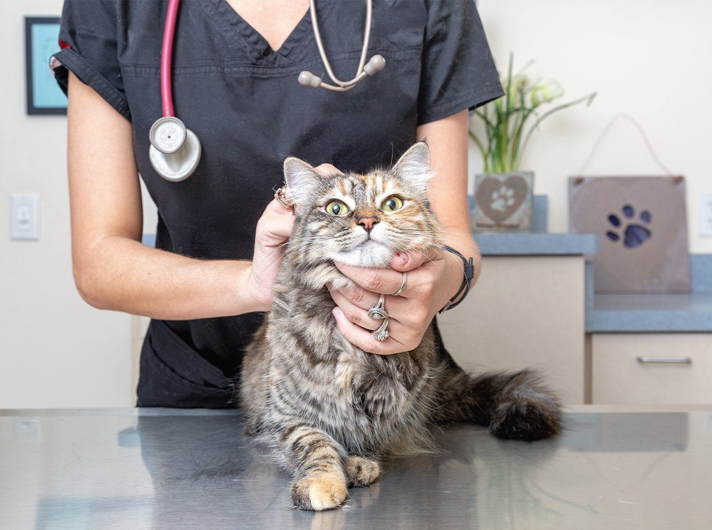
去勢手術は前立腺の病気や精巣の腫瘍を予防する役割があります。
生殖器系のホルモンバランスが変化することで、関連する疾患のリスクが低下し、健康維持に寄与します。
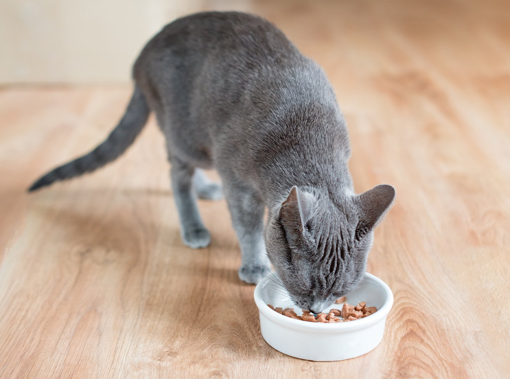
ホルモンバランスの変化により、食欲が非常に強くなったり、基礎代謝率が落ちてしまうことがあります。
それにより肥満になりやすくなる可能性が高まります。
肥満はその他の病気にも繋がるため、体重管理などをきちんと行いましょう。
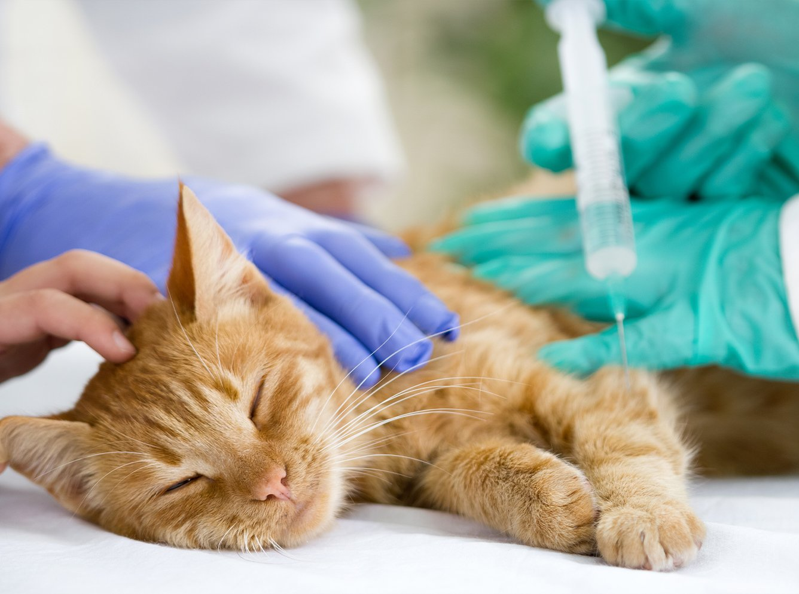
手術は全身麻酔で行われるため、年齢や体調にもよりますが、手術後に体調不良に陥ってしまう危険性もゼロではありません。
手術前に健康状態を検査してから実施しますので、過度に不安になることはありませんが、リスクがあることは理解しましょう。
はじめて発情する生後6〜8か月頃を目安にするとよいでしょう。あるいは、発情期特有の声で鳴く、スプレー行動などが見られたら去勢手術を検討しましょう。
※個体差や飼育環境などによって、時期が変動することがありますので、動物病院へご相談ください。
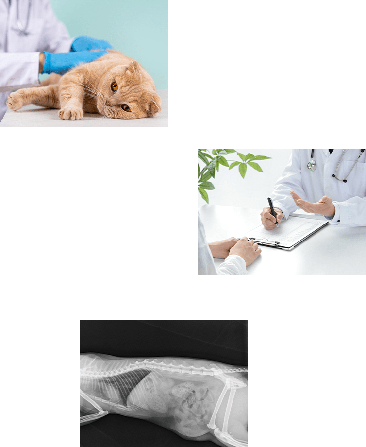
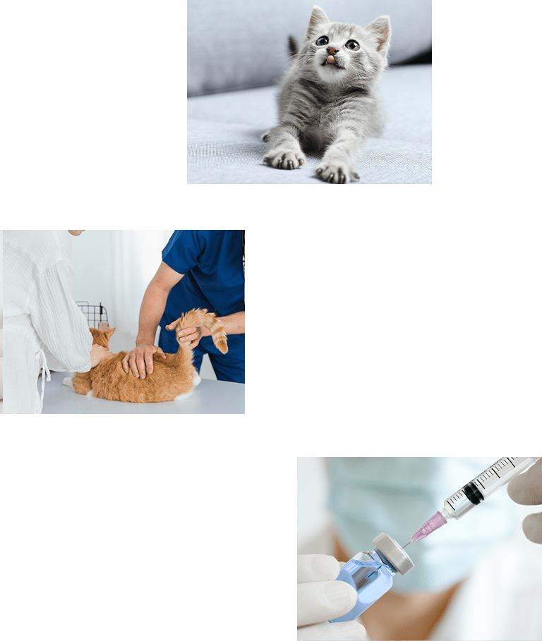
手術前に身体検査、血液検査、レントゲン検査などを行い、麻酔を施しても問題ないか調べます。
全身麻酔をしたあと、陰のうの皮膚を切開して睾丸（精巣）を摘出します。
院内で麻酔から覚めるまでの数時間、経過観察を行います。
日帰りか入院（1日）かは、猫ちゃんの年齢や状態で決定します。
去勢手術では抜糸は不要です。
術後1〜2日は食欲低下などがおこる可能性がありますが、数日で元通りになります。
もしそれ以降も元気や食欲が戻らないようであれば、動物病院にご相談ください。
※手術後は太りやすくなるため、食事管理を行いましょう。
各院の診療時間・ご予約方法は、開院に向けて決定次第ご案内いたします。